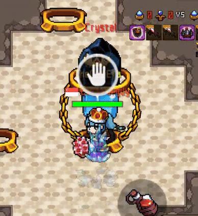
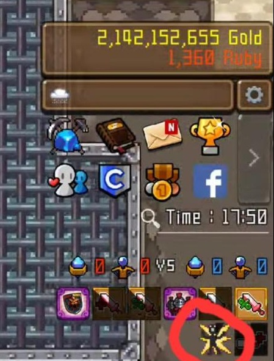
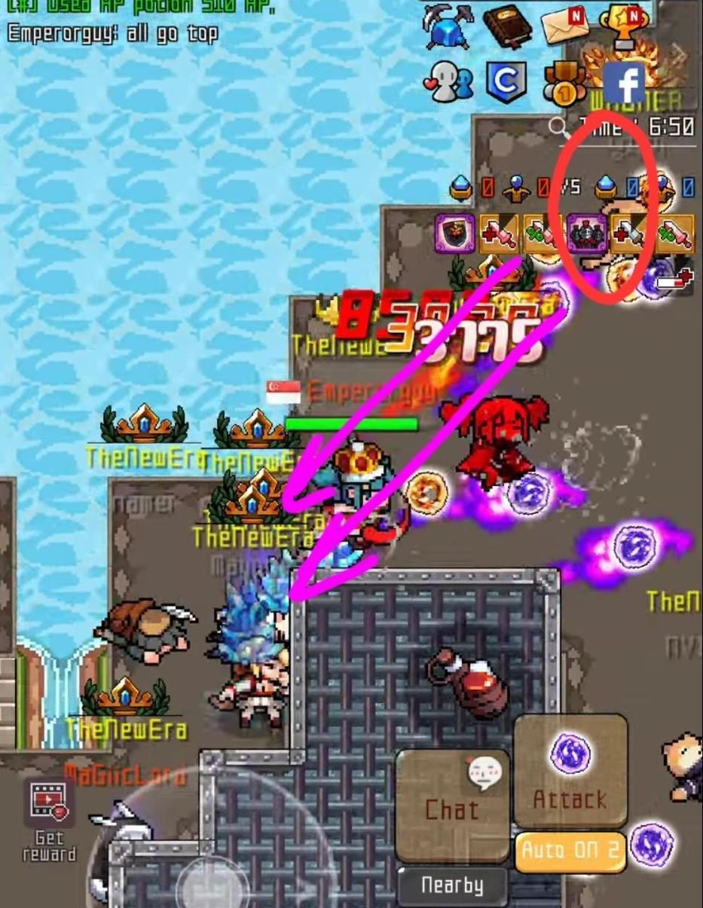
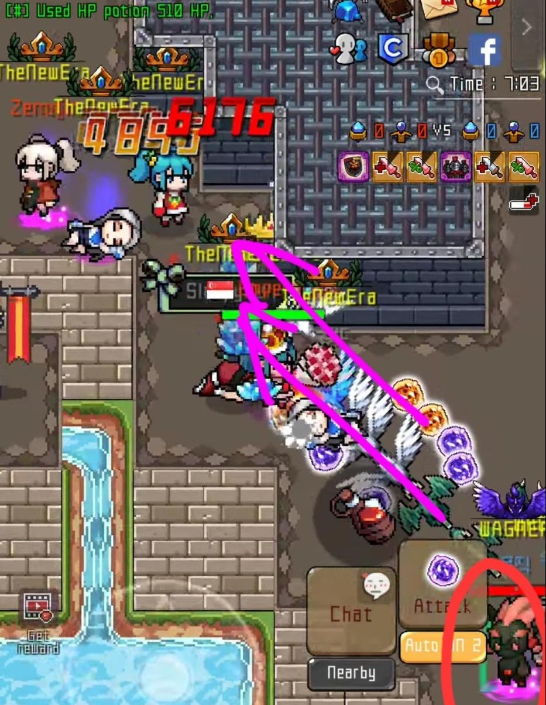

돌키우기 공성전 가이드북
어떻게 이기나요?
적의 클랜 타워를 모두 파괴한 후, 클랜 마스터가 적 기지에 있는 크리스탈을 점령해야 해요.
클랜 마스터는 약 20초간 크리스탈 위에서 가만히 각인을 해야 합니다.
각인 중 움직일 시, 각인이 초기화되니 각인중에는 클랜 마스터를 반드시 보호해야 합니다.

승리하려면 무엇을 해야 하나요?
1. 골렘
골렘을 적보다 먼저 처치하고, 화면 옆 버프 상태를 잘 확인하세요.
위쪽 골렘은 처치후 3분 뒤 재생성 됩니다. **(아래쪽 골렘은 재생성 되지 않습니다)**
재생성 타이머는 버프 지속 시간과 같습니다. 만약 버프를 얻었다면,
버프가 끝나갈 때쯤 골렘 위치로 가서 다시 처치하세요.

2. 리스폰 트랩
클랜 마스터가 크리스탈을 안전하게 점령할 수 있도록,
적이 방해하지 못하게 리스폰 트랩을 해야 해요.
적 기지에서 빨간색으로 표시된 위치에 서서 보라색 화살표 방향으로 공격하세요.
 |
 |
충분한 인원이 동시에 이 작업을 하면 적이 기지를 벗어나기 힘들게 돼요.
위쪽과 아래쪽 둘 다 막아야 하며, 각각 1~2명의 강한 플레이어가
트랩 수행자를 리스폰 지역에서 벗어난 인원들로부터 보호해야 해요.
트랩 수행자의 적정 인원은 대략 5명 정도 입니다.
3. 공격 조율(오더)
리스폰 트랩은 모두가 동시에 살아 있고 제자리에 있어야 가능해요.
따라서 전체 인원이 함께 적 기지를 공격해야 해요.
골렘 2개를 점령하고, 적의 클랜 타워를 모두 파괴한 후, 클랜 마스터가 공격 신호를 줘요.
신호가 오면 모두 기지에서 모여서 함께 전진하세요. 숫자에서 우위를 점해 적을 압도할 수 있어요.
적 기지에 도달하면 리스폰 트랩을 수행하세요.
대부분의 적이 루비를 다 썼거나 리스폰 지역에 갇히면, 클랜 마스터가 크리스탈을 쉽게 점령할 수 있어요.
일반 정보
- 자동 공격 2번을 사용하면, 적이 화면 밖에 있거나 구조물에 숨어있는 경우 이를 감지할 수 있어요
- 클랜버프와 열매의 효과는 pvp에서도 적용됩니다
- 루비가 많지 않다면 중요한 순간 **(공격 조율 시기나 적 클랜 마스터의 각인 방해 등)** 에만 쓰세요
- 패배 팀은 공성전 중 사용된 루비를 공성전이 끝난후, 절반을 돌려받을 수 있어요
- 미라클 카드는 pvp에서 사용할 수 없어요
- 장비 옵션의 공격력 증가는 PVP에서 추가 피해를 주지 않아요 **(버프류 제외)**
- 공성전 맵에서는 인벤토리 사용이 제한돼요
- 공성전은 시작 10분 전부터 입장 가능하며, 최대 30분간 진행돼요
-
공성맵 **(A:골렘 , B:포탑 , C:포탑과 억제기 및 각인 크리스탈)**